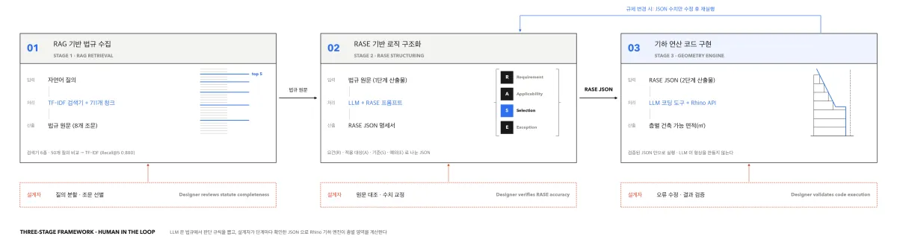
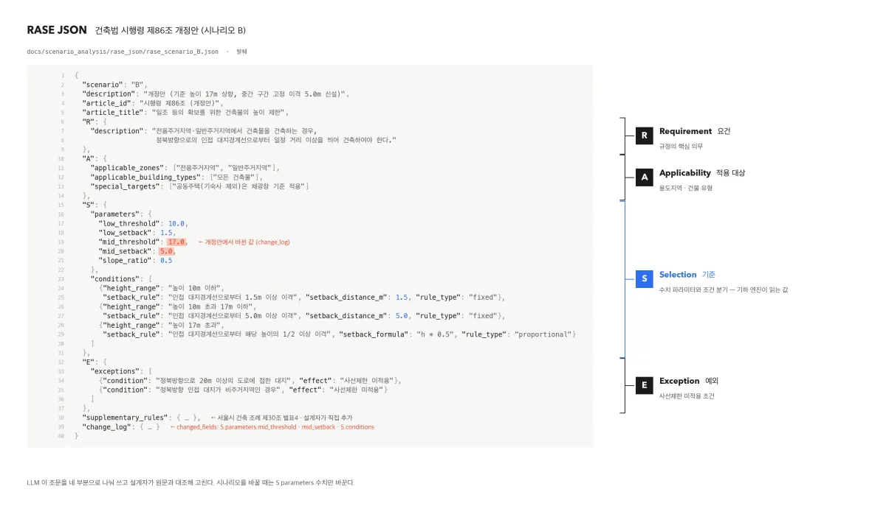
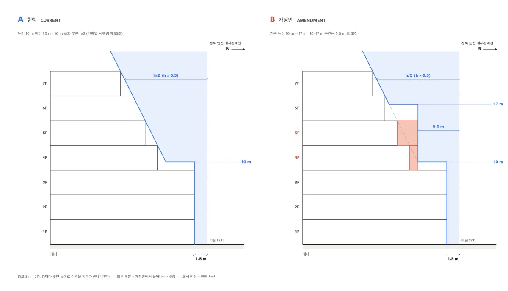
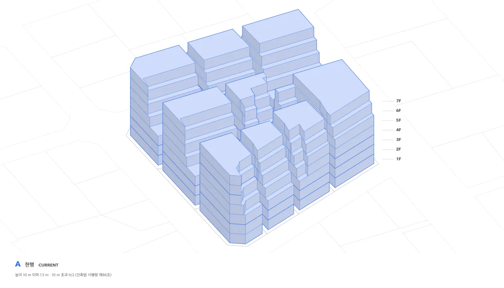
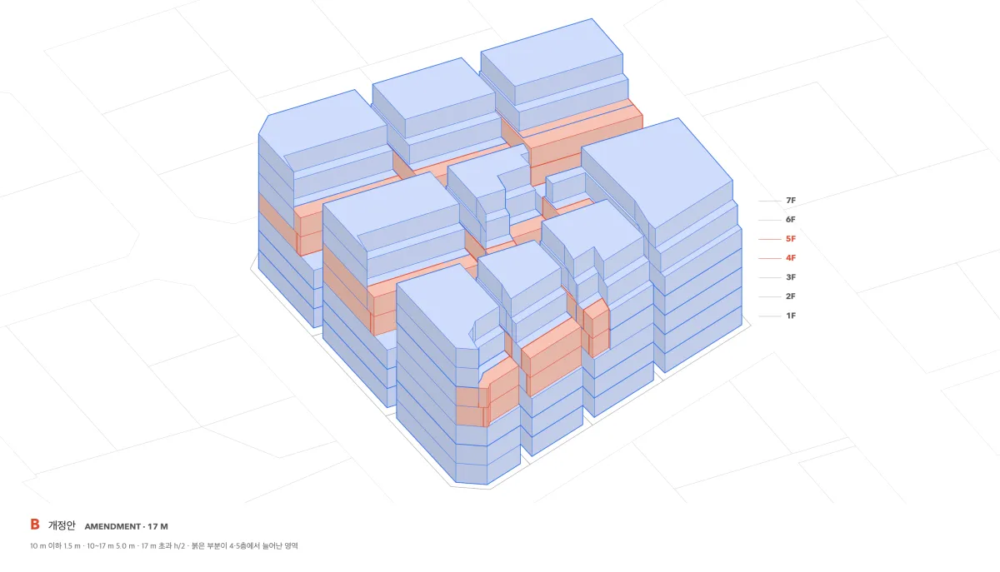
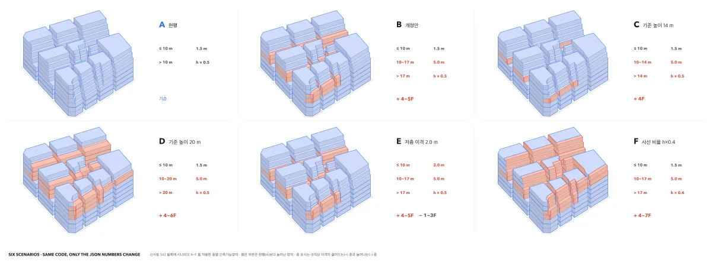
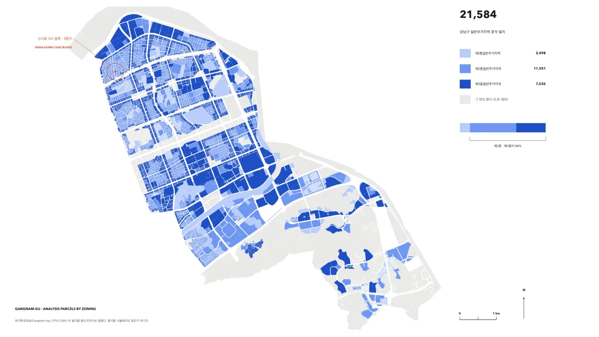
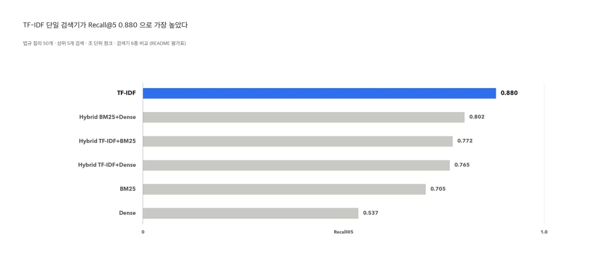

Buildable Envelope Automation
LLM 기반 건축가능영역 설계 자동화
LLM-Based Design Automation, Simulating Daylight Setback Regulation Changes

LLM에게는 법규에서 판단 규칙을 뽑는 일만 맡기고, 건축가능영역은 설계자가 검증한 규칙으로 계산한다.
법 조문을 코드에 직접 심는 규칙 기반 방식은 법규가 바뀔 때마다 알고리즘을 다시 짜야 한다. 생성형 AI에 판정과 형태 생성을 맡기면 근거를 확인할 수 없어 소명이 필요한 인허가 업무에 쓰기 어렵다. 이 연구는 LLM의 역할을 결과물 생성이 아닌 판단 규칙 추출로 다시 정의했다.
1단계는 RAG로 건축법 시행령과 서울시 건축 조례를 모으며, 조 단위 711개 인덱스에서 검색기 6종을 50개 질의로 비교해 TF-IDF를 골랐다(Recall@5 0.880). 2단계에서 LLM이 조문을 요건(Requirement), 적용 대상(Applicability), 기준(Selection), 예외(Exception)로 나눈 RASE JSON을 만들면 설계자가 원문과 대조해 교정한다. 3단계는 검증된 JSON만으로 RhinoCommon 스크립트를 돌려 필지별 3D 건축가능영역을 산출하므로 LLM이 형상을 직접 만들지 않는다.
검증 사례는 기준 높이를 10m에서 17m로 올리는 건축법 시행령 제86조 일조권 사선제한 개정안이다. 강남구 일반주거지역 21,584필지에 적용한 결과 4~5층 건축가능영역이 늘었고, 증가율은 제2종 일반주거지역 5층에서 가장 컸다(학술지 8.1%, 학위논문 7.81%). 학위논문에서는 기준 높이·고정 이격·사선 비율을 바꾼 가상 시나리오까지 모두 6개를 같은 코드에서 JSON 수치만 바꿔 실행했다.
Framework

RASE JSON

Setback Rule

Current and Amendment


Six Scenarios

Gangnam

Retrieval
